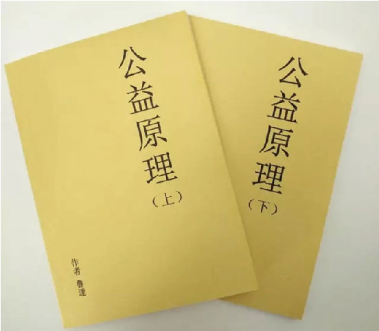

《公益原理》序：学习和理解中国公益
2016-02-25
今年来，不仅仅公益是媒体的热点，在学术领域，公益也成为一个研究的热点。据不完全统计，中国学术期刊网知网上，2002-2014年，涉及公益的期刊文章有1万篇以上，硕士论文1200多篇，博士论文也有50篇了。2013年公益慈善类的书籍超过百部。

·公益入门书推存：《公益原理》
·《公益原理》：孤独的公益人——自娱自乐的三无群体
·《公益原理》：劝募原理与三个共识
那么，这本《公益原理》与上述文献有什么不同呢？
首先是基于鲜活的实践经验。读鲁达的书稿，给我的印象是天马行空，不落雀巢。不同于出自书斋的文稿，这是一部来自实践，并对实践进行精细观察和深入思考的书稿。由于鲁达是活跃在公益第一线的实践者，所以它不但具有操作性，更重要的是问题意识突出，读时感到一股鲜活的实践气息扑面而来，触动着自己的感应神经。例如，第四章第四节讲到公益人自我修养中的创新能力时，鲁达是这样论证创新能力对于公益人的特别意义的：